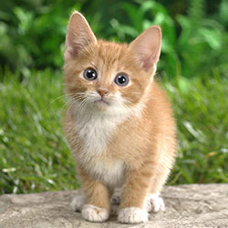

This page contains the introductory text on the cats page on
Wikipedia. And pictures of cats.
Housecats
The domestic cat is a small, typically furry, carnivorous mammal. They are often called house cats when kept as indoor pets or simply cats when there is no need to distinguish them from other felids and felines. Cats are often valued by humans for companionship and for their ability to hunt vermin. There are more than 70 cat breeds, though different associations proclaim different numbers according to their standards.
Anatomy
Cats are similar in anatomy to the other felids, with a strong, flexible body, quick reflexes, sharp retractable claws, and teeth adapted to killing small prey. Cat senses fit a crepuscular and predatory ecological niche. Cats can hear sounds too faint or too high in frequency for human ears, such as those made by mice and other small animals. They can see in near darkness. Like most other mammals, cats have poorer color vision and a better sense of smell than humans.

Communication
Cats, despite being solitary hunters, are a social species and cat communication includes the use of a variety of vocalizations (mewing, purring, trilling, hissing, growling, and grunting), as well as cat pheromones and types of cat-specific body language.
Breeding
Cats have a high breeding rate. Under controlled breeding, they can be bred and shown as registered pedigree pets, a hobby known as cat fancy. Failure to control the breeding of pet cats by neutering, as well as the abandonment of former household pets, has resulted in large numbers of feral cats worldwide, requiring population control.
Domestication
Since cats were venerated in ancient Egypt, they were commonly believed to have been domesticated there, but there may have been instances of domestication as early as the Neolithic from around 9,500 years ago (7,500 BC). A genetic study in 2007 concluded that domestic cats are descended from Near Eastern wildcats, having diverged around 8,000 BC in West Asia.